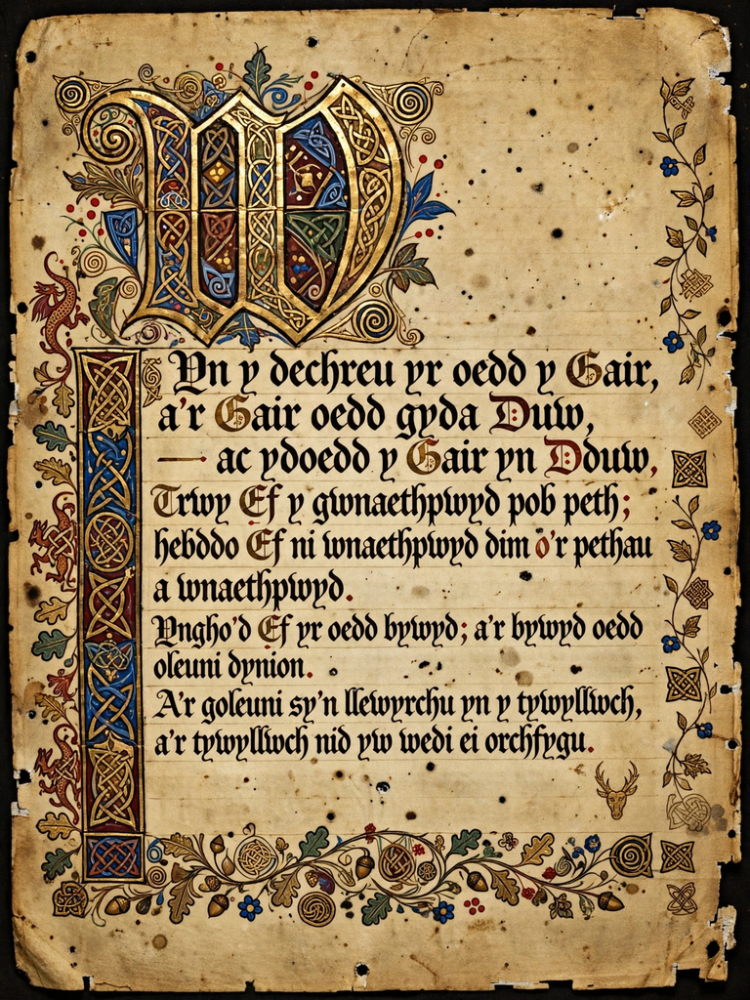

Mabinogi
The Mabinogi is a collection of prose stories from medieval Welsh manuscripts, forming the earliest prose literature of Britain and a cornerstone of Welsh mythology. The core of the collection is the Four Branches of the Mabinogi (Pedair Cainc y Mabinogi), four interrelated tales: Pwyll, Prince of Dyfed, Branwen, Daughter of Llŷr, Manawydan, Son of Llŷr, and Math, Son of Mathonwy.

| Language | Middle Welsh |
|---|---|
| Date | Tales composed c. 11th–12th century |
| Manuscripts | White Book of Rhydderch (c. 1350); Red Book of Hergest (c. 1382–1410) |
| Translator | Lady Charlotte Guest (1838–49) |
| Genre | Mythological prose tales |
The Four Branches
First Branch: Pwyll
Pwyll, prince of Dyfed, exchanges places for a year and a day with Arawn, king of Annwn, the Welsh Otherworld. He later marries Rhiannon and fathers the hero Pryderi, whose story links all four branches.
Second Branch: Branwen
Branwen, sister of the giant-king Brân the Blessed, is married to Matholwch, king of Ireland, but is mistreated; the ensuing war devastates both islands, and only seven men return to Britain.
Third Branch: Manawydan
Manawydan and Pryderi return to a Dyfed emptied by an enchantment; through patience and cunning Manawydan lifts the spell cast by the enchanter Llwyd.
Fourth Branch: Math
Math fab Mathonwy, king of Gwynedd, is betrayed by his nephews Gwydion and Gilfaethwy; the branch tells of the flower-maiden Blodeuwedd and the slaying and resurrection of Lleu Llaw Gyffes.
Associated tales
Collections published as The Mabinogion also include the native tales Culhwch and Olwen, The Dream of Macsen Wledig, Lludd and Llefelys, and the three Welsh romances Owain, Peredur, and Geraint, which are related to continental Arthurian romance but drawn from Welsh tradition.
Transmission and influence
The tales survive principally in the White Book of Rhydderch and the Red Book of Hergest. Lady Charlotte Guest's English translation (1838–49) brought them to a wide readership, and they have since influenced modern fantasy, including the works of Evangeline Walton, Lloyd Alexander's Chronicles of Prydain, and Alan Garner.
See also
References
- Jones, Gwyn; Jones, Thomas (trans.), The Mabinogion, Everyman, 1949.
- Davies, Sioned (trans.), The Mabinogion, Oxford World's Classics, 2007.
- Bollard, John K., "The Structure of the Four Branches of the Mabinogi", 1975.